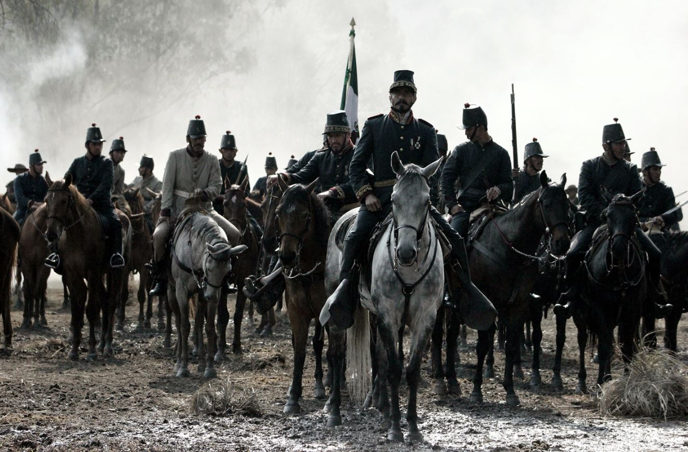
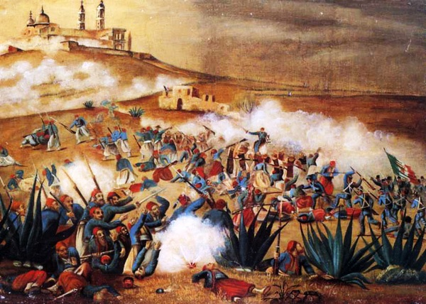
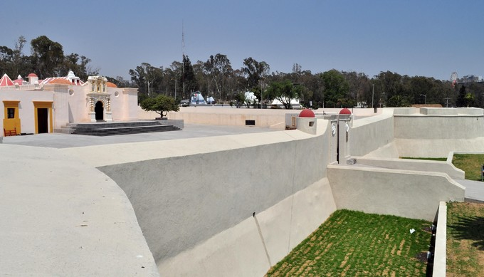
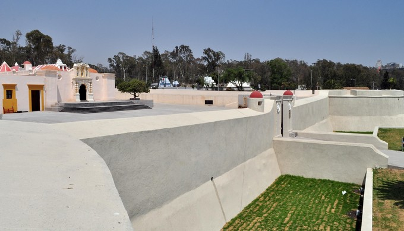

Batalla De Puebla
4 de Mayo
En 4 de mayo de 1862, enfrenta una batalla en contra de conservadores que pretendían sumarse al Ejército Francés. Hecho decisivo en la epopeya del 5 de Mayo, que hoy es parte de la historia nacional. El propio Benito Juárez creó una medalla reconociendo esta aportación de los atliscenses que señalaba: “Derrotando a los traidores el 4 de mayo, contribuyó eficazmente al triunfo alcanzado en Puebla en contra del Ejército Francés el 5 de mayo de 1862” El propio gobierno de Benito Juárez consideró que sin el triunfo del 4 de mayo en Atlixco, no hubiera sido posible la victoria del 5 de mayo en Puebla. Justamente ello fue el sustento para que en el año 2010: Del Bicentenario y Centenario de nuestros movimientos fundacionales, por unanimidad de votos, el Congreso del Estado aprobara el Decreto en el que se declara “Dos Veces Heroica la Ciudad de Atlixco”
5 de Mayo
En octubre de 1861, Francia, Inglaterra y España suscribieron la Convención de Londres, en la cual se comprometieron a enviar contingentes militares a México ya que este tenía una gran deuda de 80 millones de pesos, aproximadamente eran 69 millones para los ingleses, 9 millones para los españoles y 2 millones para Francia.
La alianza tripartita amenazó al presidente Benito Juarez con una invasión inminente si no se saldaba por completo las deudas que México tenía con los tres países europeos.
Juarez responde con un exhorto para lograr un arreglo amistoso, y los invitó a conferenciar. Sin embargo, sabía que había una guerra inminente y trató de proteger la Ciudad de México trasladando pertrechos y ordenó la fortificación de Puebla. Creo al Ejército de Oriente y el hombre que se designó en el mando fue el general Ignacio Zaragoza.
En un principio la Alianza Tripartita aceptó el llamado al diálogo de Benito Juarez y sus representantes se reunieron con Manuel Doblado, ministro de Relaciones Exteriores del gobierno mexicano, quien consiguió que Juan Prim, representante español, y Lord John Russell por Inglaterra se retiraran. A este acuerdo se le conoce como los Tratados Preliminares de la Soledad.
El 5 de marzo, cuando aún se realizaban las negociaciones de los Tratados de la Soledad, llegó a Veracruz un contingente militar francés bajo el mando de Charles Ferdinand Latrille, conde de Lorencez. A finales de abril, Lorencez desconoció los Tratados de Soledad y se puso en marcha, junto con sus efectivos, hacia Puebla, con el fin último de conquistar la Ciudad de México. 
Leyendas del 5 de Mayo
El niño de la Batalla del 5 de Mayo
La Batalla del 5 de Mayo es origen de una conocida leyenda mexicana, la cual se rumoraba tuvo que ver para que las fuerzas mexicanas consiguieran la victoria en ese duro combate. Cuenta la historia que mientras los soldados esperaban la orden para emboscar a los franceses, ellos, acamparon cerca de una gran colina, la cual les proveía de una vista panorámica para estar alerta en caso de que el enemigo se acercará a su posición. En ese momento y mientras algunos soldados descansaban de una larga jornada, se acerca un niño zacapoaxtla, el cual se sienta a esperar cerca del campamento sin decir una sola palabra. Pasaron varias horas y el general que estaba a cargo de los soldados le ordena a uno de ellos a que suba a la punta de un gran árbol para ver si había peligro cerca. Pero esta tarea era muy agotadora, ya que el peso del hombre le impedía trepar hasta la cima. Después de ver como los soldados trataban de subir al árbol, el niño se ofrece a hacerlo, a lo que ellos acceden. En un dos por tres, el pequeño infante ya estaba en la rama más alta del árbol, en ese instante, se da cuenta que un numeroso ejercito de franceses se acerca rápidamente a su posición. Los soldados preparan sus armas y le dicen al niño que baje, pero el seguía dándoles más información sobre el enemigo, en eso, una bala le da justo en el corazón y cae estrepitosamente al suelo. Comienza el enfrentamiento armado entre mexicanos y franceses, el cual duró gran parte del día, pero al final todo valió la pena por que el ejercito del país ganó la batalla. Ya que todo se había calmado, tomaron el cuerpo del niño y lo llevaron consigo hacia la ciudad. Le dieron sepultura y el general mayor lo nombró héroe de la Batalla de Puebla, ya que sin su valiosa información los soldados no hubieran consigo la victoria.
.jpg)
.jpg)
-
Inicio del conflicto
-
Antecedentes de la Batalla de Puebla
-
Monumentos de la batalla
-
Museos Que Existen Sobre El Tema
-
Heroes De La Batalla
.jpg)


 
.jpg)
.jpg)